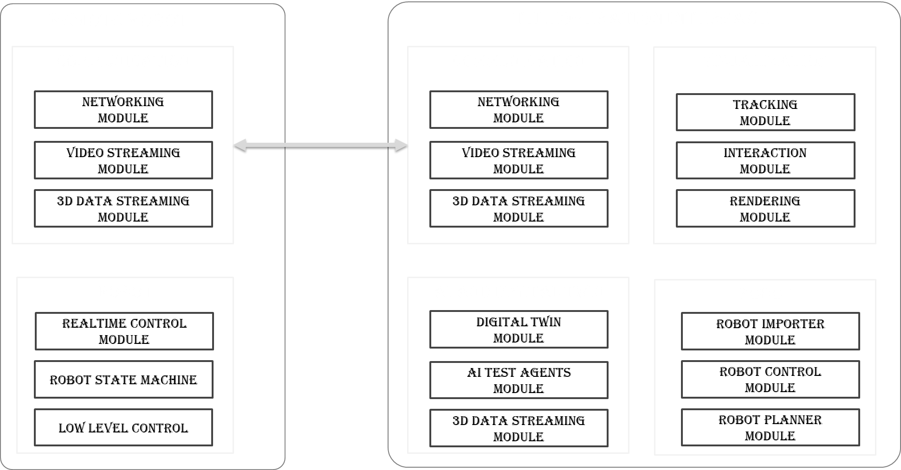

What This Interface Does¶

The UI provides the operator-facing layer for the telepresence and teleoperation software stack. It is used to:
- connect to the robot, simulator, or middleware;
- view sensor and environment information;
- monitor robot state and communication status;
- select available control modes;
- send commands to the remote system;
- support safe and understandable interaction with the remote environment.
Basic Workflow¶
A typical session follows this sequence:
- Start the backend communication components.
- Launch the robot, simulator, or remote environment.
- Open the telepresence UI.
- Connect the UI to the active session.
- Verify incoming feedback streams.
- Select a control mode.
- Begin teleoperation.
- Monitor system status and stop safely when finished.
Before You Begin¶
Before launching the UI, make sure you have:
- installed the required software dependencies;
- cloned or downloaded the required repositories;
- configured the communication middleware;
- confirmed that the robot or simulator is running;
- verified that the required network ports, services, or topics are available.
Background Reading¶
This documentation uses terminology from the broader telepresence and teleoperation literature. The IEEE Telepresence Committee maintains a curated resources page with event recordings, books, journals, and articles on telepresence technologies.
Recommended starting points:
- IEEE Telepresence Resources
- Marvin Minsky, "Telepresence" / "Telepresence Manifesto" (1980; IEEE Spectrum republication)
- Thomas B. Sheridan, "Musings on Telepresence and Virtual Presence" (1992)
- Stanford CDR, "Telepresence Definitions"
- John V. Draper, David B. Kaber, and John M. Usher, "Telepresence" (1998)
- Kwan Min Lee, "Presence, Explicated" (2004)
- Irene Rae, Gina Venolia, John C. Tang, and David Molnar, "A Framework for Understanding and Designing Telepresence" (2015)